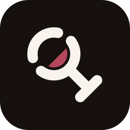
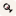

Este é o Design System do AVYN para iOS: as cores, a tipografia, as medidas e os componentes que o MVP usa na busca de vinhos, na adega e nos avisos por WhatsApp. Tudo aqui sai dos tokens em tokens/; nenhum valor desta página foi digitado à mão.
Os controles seguem o iOS. A marca aparece na cor, na tipografia, no símbolo da taça-lupa e na janela de consumo, o único componente que só o AVYN tem.
Versão 0.1 · 15/11/2026Paleta Warm & Friendly PremiumFontes Playfair Display + DM SansConteúdo vinhos, lojas e preços fictícios
Marca
O símbolo é a taça-lupa: o bojo da taça é a lente, a haste é o cabo. Ele diz o que o app faz, olhar o vinho de perto, sem precisar de texto.
Ícone claroFundo creme, vinho granada

Ícone escuroFundo quase-preto, vinho noturno
6432

16
Teste de tamanhoLê como lupa até 16 px
Símbolo dentro do app
Sem o fundo do ícone, o símbolo ocupa o lugar da ilustração nos estados vazios. Esta versão do app não tem mascote.
Estados vazios: 88 pt (size.empty-symbol), uma vez por tela.
Não é ícone de ação nem de aba e não entra em toasts; ali ficam os SF Symbols.
Não girar nem recolorir fora dos pares claro e escuro; sem sombra, contorno ou animação.
Cor
Quatro famílias: vinho, mel, quase-preto e creme. Os neutros têm a mesma temperatura quente nos dois modos, por isso o app continua reconhecível no escuro. Na interface só se usam os papéis semânticos abaixo; as escalas são matéria-prima.
Claro
Escuro
Um tint só.tint.default marca tudo que é tocável: links, ícones de ação, seleção. Nada de vinho como decoração.
Dourado não é texto no claro. Para texto dourado use accent.ink; accent.default é para estrelas, filetes e a janela de consumo.
No escuro, o botão usa o vinho do logo escuro (#B4475B) e o texto interativo usa um vinho claro e pouco rosado (#D38686).
Erro não é vinho. O vermelhão de status.danger foi afastado do granada para que um erro nunca pareça marca, e o âmbar de atenção foi afastado do dourado.
Cor de dado, sempre acompanhada do nome. Nunca é o único jeito de saber o tipo.
Tipografia
Playfair Display dá voz aos títulos, aos nomes dos vinhos e aos destaques. DM Sans cuida de textos, menus, botões e informações. Preço é dado de confiança: sempre DM Sans. Todos os estilos escalam com o Dynamic Type do iOS.
Brunello di Montalcino 2018
Playfair Display 400–900 · títulos a partir de 18 pt
R$ 189,90 · 750 ml · 14% · Douro
DM Sans 100–1000, eixo óptico 9–40 · sem algarismos tabulares: alinhe preços à direita
Playfair só a partir de 18 pt. Abaixo disso os traços finos somem; use DM Sans.
Elementos do sistema ficam em SF Pro: alertas, menus de ação, teclado, seletores de data e a barra de status.
Dynamic Type: cada estilo escala com o text style do iOS indicado (UIFontMetrics no iOS, textScaler no Flutter). Teste no maior tamanho de acessibilidade: o nome do vinho quebra linha, nunca trunca.
Espaço e forma
Base de 4 pt. Grupos apertados por dentro e separação generosa entre grupos. Cantos sempre contínuos (squircle), e botões, chips e busca em cápsula, como os controles do iOS atual.
Raios
Profundidade
Sombra só no claro e só no que flutua. No escuro, a profundidade vem da superfície mais clara (surface.elevated).
shadow.card
shadow.floating
surface.default
surface.elevated
Medidas de toque
Movimento
O app usa as transições do iOS: push, sheet e o gesto de voltar. A marca entra num único momento autoral: quando uma garrafa entra na adega, o contador sobe com uma mola curta. Com Reduzir Movimento ativo, tudo vira fade de 200 ms.
12 garrafas
motion.spring.cellar · 500 ms, bounce 0,2 · só neste momento
Token
Valor
Uso
motion.spring.snappy
300 ms, bounce 0
Estados de controles, filtros
motion.spring.smooth
450 ms, bounce 0
Expandir células, mudar ordenação
motion.spring.cellar
500 ms, bounce 0,2
Garrafa entrando na adega
motion.duration.fade
200 ms
Substitui qualquer movimento com Reduzir Movimento
Botões
Cápsulas com 44 pt de altura (50 pt no botão principal de uma tela). Um único botão primário por tela. Texto do botão é a ação: “Adicionar à adega”, nunca “OK”.
Principal action.primary + label.on-action · Secundário action.secondary + tint.default · Destrutivo status.danger-subtle + status.danger · Raio radius.full
Busca e filtros
O campo de busca é a porta do MVP. Fica no topo da aba Buscar, em cápsula, e os filtros vêm logo abaixo como chips que rolam na horizontal. O filtro ativo inverte as cores.
Campo fill.tertiary, placeholder label.secondary, foco com anel de 2 pt em tint.default · Chip ativo label.primary sobre background.base invertido
Preço, selos e avaliação
Preço é a informação mais importante da busca, então ganha peso e nunca fica em serifa. O selo dourado “Melhor preço” aparece uma vez por lista, só na oferta mais barata.
R$189,90R$214,00R$ 239,00
Melhor preçoCaiu 12%No pontoBeber logoPassou do pontoGuardar
4,3 (1.284)TintoBrancoEspumante
Formato de preço:R$ 189,90 (pt-BR, vírgula decimal, símbolo menor e em label.secondary).
Avaliação: uma estrela em accent.default, nota com uma casa decimal e o número de avaliações. Nunca cinco estrelas parciais.
Estado da garrafa (guardar, no ponto, beber logo, passou do ponto) sempre com texto. A cor só reforça.
Vinho na lista
A linha de resultado da busca. Nome em Playfair, procedência em DM Sans, e o menor preço alinhado à direita com quantas lojas foram comparadas.
Cerro Azul Malbec Reserva 2021Bodega Cerro Azul · Mendoza, Argentina
4,2Melhor preço
R$119,90em 9 lojas
Château Lune Blanche 2020Bordeaux, França · Branco
4,0
R$248,00em 3 lojas
Nome typography.wine-name (18 pt) · Procedência typography.subheadline · Preço typography.body-strong · Miniatura 40×56 pt, radius.sm, cor do tipo quando não há foto
Comparação de preços
O “Buscapé” do vinho. Ofertas ordenadas do menor para o maior preço, com frete e prazo na segunda linha. A mais barata ganha fundo tingido e o selo dourado. Preço e frete são sempre visíveis; nada de “a partir de”.
ES
Empório do SulFrete R$ 19,90 · chega em 3 dias
R$189,90Melhor preço
VC
Vinhos & CiaFrete grátis · chega em 5 dias
R$204,50
AC
Adega CentralRetirar na loja · Porto Alegre
R$219,00
Melhor oferta surface.tinted + accent.subtle/accent.ink · Linha mínima 64 pt · Toque abre a loja no navegador do sistema (SFSafariViewController)
Janela de consumo
O componente-assinatura do AVYN. Uma régua de anos mostra quando o vinho está bom para beber (faixa dourada), o auge (dourado cheio) e onde estamos hoje (marcador vinho). Responde à pergunta que o colecionador mais faz: abro agora ou espero?
Janela de consumoNo ponto
2022202420262028203020322034
Régua dois anos antes e dois depois da janela
Janela anos em que o vinho está bom para beber
Auge os melhores anos dentro da janela
Hoje marcador no tint; decide o selo de estado
Os quatro estados
O selo sai da posição de hoje: antes da janela, Guardar; dentro dela até o fim do auge, No ponto; depois do auge, Beber logo; depois da janela, Passou do ponto. Quando hoje cai fora da régua, ela se estende até hoje.
Janela 2028–2036 · auge 2030–2033Guardar
202620322038
Janela 2024–2032 · auge 2026–2029No ponto
202220282034
Janela 2020–2028 · auge 2022–2025Beber logo
201820242030
Janela 2015–2024 · auge 2018–2021Passou do ponto
201320202028
Compacta, para listasBeber logo
Sempre com texto: o selo de estado e o rótulo de acessibilidade dizem a janela em palavras.
A régua começa dois anos antes da janela e termina dois depois, para que “hoje” nunca fique colado na borda.
A janela vem do produtor ou da crítica. Quando não houver dado, o componente não aparece; nunca mostre uma janela estimada sem dizer que é estimativa.
Adega
O resumo mostra o que importa para quem guarda vinho: quantas garrafas há, quantas estão prontas e quantas pedem para ser abertas logo. Cada garrafa traz a janela compacta e a quantidade (×3). Para mudar a quantidade, o detalhe da garrafa usa o stepper do sistema, com o número ao lado.
24garrafas
7no ponto
3beber logo
Quinta do Vale Alto Reserva 2019Douro · guardado em 2023
×3
Casa Serrana Brut NatureSerra Gaúcha · beber logo
×1
Garrafas
Números do resumo em font.family.display 28 pt · “no ponto” em status.success · Arrastar a linha para a esquerda revela “Abrir garrafa” e “Remover” (swipe actions do sistema)
Estados vazios e toast
Estado vazio diz o que aconteceu e o que fazer, com uma ação só. O símbolo da taça-lupa ocupa o lugar da ilustração. O toast confirma ações rápidas e some sozinho em 3 segundos.
Sua adega está vazia
Busque um vinho e toque em “Adicionar à adega” para começar a guardar.
Nenhum vinho para “malbek”
Confira a grafia ou tente pela uva, pelo produtor ou pela região.
No MVP o WhatsApp só envia avisos; o usuário não conversa com o app. Os tipos de aviso ainda não estão definidos. Abaixo, três candidatos para mostrar o padrão: a marca entra pelo avatar e por um card curto, o resto é a interface do WhatsApp.
AVYNconta comercial
O preço caiu no vinho que você acompanha:
Cerro Azul Malbec 2021
R$ 119,90 R$ 136,00
Melhor oferta em Empório do Sul.
Ver ofertas
AVYNconta comercial
Da sua adega: Casa Serrana Brut Nature está no fim da janela de consumo. Boa hora para abrir.
Abrir a adega
Espumante da semana: Casa Serrana Brut Nature por R$ 59,90 no Empório do Sul, o menor preço entre 4 lojas.
Ver ofertas
Uma ideia por mensagem, até três linhas, e um botão de ação que abre o app na tela certa.
Preço sempre com a loja e, quando houver, o preço anterior riscado.
Avatar: ícone escuro da taça-lupa (contraste melhor dentro do círculo do WhatsApp). Nome do perfil: AVYN.
Simulação. Mensagens e preços são fictícios, e as cores do WhatsApp aparecem só para dar contexto.
Telas de referência
Os componentes montados nas três telas do MVP. A estrutura de abas é provisória (a navegação final ainda não foi decidida) e todo o conteúdo é fictício.
9:41
Buscar
FiltrosTintoAté R$ 150Argentina
38 vinhos · preços de 12 lojas · menor preço primeiro
Cerro Azul Malbec Reserva 2021Mendoza, Argentina
4,2Melhor preço
R$119,909 lojas
Altos de Uco Malbec 2022Valle de Uco, Argentina
4,0
R$134,506 lojas
Finca Piedra Sola Malbec 2020Salta, Argentina
4,4
R$148,004 lojas
Busca com resultados. Campo e filtros no topo, contagem honesta de lojas, menor preço primeiro.
9:41
Buscar
foto do rótulo
Cerro Azul Malbec Reserva 2021
Bodega Cerro Azul · Mendoza, Argentina
4,2 (1.284)Tinto · 750 ml
R$119,90Melhor preço em Empório do Sul
Caiu 12%
Janela de consumoNo ponto
202120262033
Detalhe do vinho, modo escuro. Preço e ação principal acima da dobra; a comparação de lojas vem logo abaixo, ao rolar.
9:41
Adega
24garrafas
7no ponto
3beber logo
TodasNo pontoBeber logoGuardar
Casa Serrana Brut NatureSerra Gaúcha · beber logo
×1
Quinta do Vale Alto Reserva 2019Douro · no ponto
×3
Château Lune Blanche 2020Bordeaux · guardar até 2028
×2
Adega. Resumo, filtro por estado e garrafas ordenadas pela urgência: o que precisa ser aberto logo vem primeiro.
9:41
Adega
Sua adega está vazia
Busque um vinho e toque em “Adicionar à adega” para começar a guardar.
Adega vazia, modo escuro. O símbolo da taça-lupa no lugar da ilustração e uma ação só.